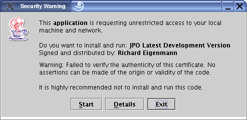

JPO Java Picture Organizer
Introduction
Features
Screenshot
Reviews
Requirements
Download
Installation
License
Thanks
Documentation
Changelog
Bugs
Potential Features
Links
Author
Launched: 14.1.2003
Introduction
The Java Picture Organizer application is a platform independent image organisation tool that lets a user build collections of images that they can then search, browse, show and share with others. An HTML export facility is available that allows web pages to be built from collections. JPO uses an open XML file format to store collection information. Picture groups can be exported to a directory for CD burning and sharing by other means. JPO supports all picture formats of your Java installation. By default this is JPEG and GIF. The application makes use of Sun's Java Web Start (TM) technology for easy installation and upgrading.
Features
- Quickly Organize digital images into collections and groups
- Creates web pages from your collection
- Send rescaled images and originals via email (development version only)
- Simple zoom in and zoom out with left / right mouse buttons
- Rotation on the fly without modifying the original image
- Download pictures from Camera with the ability to load only the new ones
- Browse image thumbnails
- View pictures as a slideshow
- Automatically advancing Slideshows
- Captures metadata and has search features
- Displays EXIF and IPTC metadata
- Export to directory facility to share via e-mail or CD-ROM
- Open XML data structures
- Pure Java, no native libraries used
- Can call up outside applications
Screenshot
The Thumbnail Browser:

The slideshow window:

Reviews
I am totally amazed by the positive reviews that people have written about JPO. These reviewers never informed me they were doing reviews and I just stumbled over them whilst googling around. Thanks a lot! By the way, feedback is appreciated.
http://www.agfanet.com.isp.de/en/cafe/softreview/cont_softreview.php3?id=257&archive=yesRequirements
This is a pure Java application so it runs anywhere that Java 1.4.0 (or later) runs. (At least that's the theory. I run it on KDE / Linux and Windows 2000. Richard Bennett has run it on an Apple iBook using the Safari Browser on OS X 10.2.4 as well as a Win 98 machine. Let me know what you've managed to get it working on.)
You MUST download a recent Java runtime library. You must have Java 1.4.0 or later. Sun introduced cool fast graphics routines in Version 1.4. JPO uses these routines and will not work on older versions such as 1.3 and 1.3.1. You can download the Java Runtime Environment (JRE) or the Java Software Development Kit (SDK) here: http://java.sun.com/j2se/1.4.2/download.html
If your are running Linux I suggest you use the IBM JVM as it seems to be twice as fast as the Sun JVM in loading images.
Download
The simplest way to run JPO is using the Java Web Start technology. Simply click on the link below to install and run the application:
JPO (current version 0.8.5)
Frozen Version 0.8
Frozen Version 0.8.2
Frozen Version 0.8.3
Frozen Version 0.8.4
For Windows users there is an outdated packaged Windows version available. Download it from the regular Sourceforge download area (better use the Java Web Start version!):
The following links allow you to download the source environment so that you can build JPO yourself. Note that I have now transitioned to sourceforge CVS and therefore your better choice is to download the JPO source from CVS as this is always up to date.
Source environment (v0.8 .zip 4.1MB)
Source environment (v0.8.2 zip 4.2MB)
Source environment (v0.8.3 zip 4.2MB)
Source environment 18.3.2004 (v0.8.4 zip 9MB)
I now use SourceForge's CVS repository. If you ask me nicely I will put instructions here how to download a build environment.
Installation using Java Web Start
Java Web Start installation is usually quite easy. All you need is a recent Java Runtime Environment installed on your PC. Then you click on the link to the Java Web Start program in your browser and the program starts.
Note: You will see the following warning screen:

You get this warning message because I haven't splashed out to buy myself a 100 USD certificate with which to sign the packaged programs. JPO does need access to your hard disk or you won't have much joy organising your pictures.
Java Web Start typically installs a programm called javaws which is the local client. Depending on your operating system the java installation process does a good or poor job of registering the file type .jnlp in your web browser for the javaws program. What your web browser must do when it gets the request to load a .jnlp file is to start javaws. That program then uses the web to download the Jpo program files and starts them. Java Web Start also checks each time you run the program that it is up to date and if I've released a new Version asks you if you want to upgrade.
Basically the mime type application/x-java-jnlp-file with the extension .jnlp needs to be associated with the javaws.exe program.
Here are some notes on setting up Jpo with Java Web Start on some specific browsers:
Opera on Windows
If the download dialog asks what to do, click "Advanced". There specify "Open with other application". Click on "Choose". On my PC the program is stored on C:\Program Files\Java Web Start\javaws.exe Choose the javaws.exe program (wherever you have it). Click OK.
Linux
Install Java Web Start first since it's a zip file and not normally unzipped by the installation
Use the following command to find the program:
find / -name javaws -print
To run the program execute the following (single line):
/PATH/TO/YOUR/JAVAWS/javaws http://j-po.sourceforge.net/jpo.jnlp
Local Installation
If you don't like Java Web Start or want more control you can download the program files and run Jpo locally. Unfortunately Jpo can't just be started with a doubleclick as it needs the memory parameters specified and it needs to be told where the added libraries reside. Follow these instructions:
First download the jar files: jpo-0.8.5.jar, metadata-extractor-2.2.jar, jnlp.jar.
Then you need to create a script of batch file to run everything. On Linux the script would look like this: (all on one line; space characters do matter; don't put spaces between the jars separated by colons(:) in the classpath!)
/PATH/TO/YOUR/JAVA/bin/java -Xms80M -Xmx200M
-classpath /PATH/TO/YOUR/JPO/JARS/jnlp.jar:
/PATH/TO/YOUR/JPO/JARS/metadata-extractor-2.2.jar:
/PATH/TO/YOUR/JPO/JARS/jpo-0.8.5.jar jpo.Jpo
On a particular Windows XP machine I installed Jpo into c:\Program Fils\Jpo. The resulting Batch file looks like this: (you can download it here: Jpo.bat
c:\windows\system32\java -Xms80M -Xmx200M -classpath
"c:\Program Files\Jpo\jnlp.jar";
"c:\Program Files\Jpo\metadata-extractor-2.2.jar";
"c:\Program Files\Jpo\jpo-0.8.5.jar" jpo.Jpo
Note: On Windows machines the classpath must be separated by semicolons (;) on Linux machines by colons (:)
Memory settings:
If you get out of Memory errors then you are probably best off using the local jar way of starting this application as you can then set the initial memory heap with the -Xms and the maximum memory heap with the -Xmx parameters. Of course this can also be done on the web start version but you would have to set Jpo up on your own webserver so that you could specify the memory settings in the .jnlp configuration file.
Helpful Links
Sun's Web start FAQ: http://java.sun.com/products/javawebstart/faq.html
Sun's Java Web start download page: http://java.sun.com/products/javawebstart/download.html
Unofficial Java Web Start/JNLP FAQ: http://www.vamphq.com/jwsfaq.html
Please let me know of specific installation issues you have so that I may extend this section for the benefit of other users who might have the same issue.
Installing the source
Download the source and unzip it to your target directory. Then follow the instructions in the README.txt file.
License
JPO is licenced under the GPL license. It is explaned here: http://www.gnu.org/copyleft/gpl.html
Thanks
- Drew Noakes for posting the Exif decoder software on his homepage http://drewnoakes.com
- Jacob Dreyer for the Makefile framework http://geosoft.no
- Philip Milne for contributing the Table sorter code via the Java Tutorial
- Lode Leroy for helping with the run-from-jar
- Csaba Nagy for helping with the Ant- setup
- Joe Azure for the Page Count display in the Thumbnail pane
- Dean S. Jones for his icon collection on http://www.gallant.com/icons.htm that I have modified to suit my needs.
- Sandra Keller for putting up with me while I was developing this software which she would "Delete right away after downloading it from the internet"
Documentation
I haven't written any end user documentation yet.
Changelog
| Version 0.8.5 | |
| 19.9.2005 | Improved user interface to tag pictures with categories. |
| 11.9.2005 | After JPO adds pictures it jumps to the new pictures and shows them. |
| 4.9.2005 | Quality of Lowres can be independently adjusted from midres quality in HTML export. |
| 4.9.2005 | Folder icon not being rendered properly for HTML page fixed |
| 1.9.2005 | Proper escaping of special characters in HTML |
| 10.6.2005 | Fixed some messed up positioning in the Picture Viewer |
| 10.6.2005 | If you had viewed a picture and then closed the viewer then deleted the image the picture viewer would open up and show the next image. Undesirable. Removed |
| 10.6.2005 | Fixed annoying behaviour in Picture Pane where an end of drag would zoom in. |
| 22.5.2005 | Fixed a bug with consolidate that did not like blanks in a filename. |
| 24.4.2005 | Added ability to show Thumbnails in different sizes. |
| 18.3.2005 | Added option to not retain directory structures when adding pictures. |
| 15.2.2005 | Added rotate buttons to PictureViewer and updated some icons. |
| 23.1.2005 | Descriptions in email are encoded in iso-8859-1 |
| 23.1.2005 | Filenames are preserved on the email. |
| 9.1.2005 | Basic Email functionality added |
| 1.1.2005 | Fixed a silly bug that wrote collections that could not be read back in |
| 07.12.2004 | Added a keyboard shortcut (1) that jumps to full image resolution |
| 08.11.2004 | The introduction of multi selection killed the validation of not dropping onto a node's children. This has been reintroduced. |
| 06.10.2004 | Selections in one Group were not cleared when switching to another group which caused odd drag and drop behaviour |
| 06.10.2004 | Rotation set the angle instead of rotating by the angle. Fixed. |
| 06.10.2004 | Fixed a bug in the Pictureviewer: Image would not rotate if user chose a rotate function |
| 06.10.2004 | Added a display of how many thumbnails are on the queue |
| 28.09.2004 | Fixed the logic of what happens when you are showing an image and then rmove it's node or it's parent node |
| Version 0.8.4 | |
| 20.08.2004 | Consolidate now also consolidates the group thumbnails |
| 20.08.2004 | Bugfix: im thumbnail size was not exactly specified thumbnail size or original image was smaller than thumbnail then thumbnail creation could loop |
| 20.08.2004 | Tried to improve code regarding synchronisation which caused GUI freeze |
| 05.08.2004 | Mark: Windows build for CT |
| 05.08.2004 | After a drop of multiple nodes the nodes remained selected which included them in the next drag and drop which is very confusing to users. |
| 02.08.2004 | Bugfix Count of Nodes was giving too high a number |
| 02.08.2004 | Bugfix Consolidation counted nodes wrongly when not consolidating sub groups. |
| 02.08.2004 | Bugfix switching to Window without Frame would make the picture verz small. |
| 02.08.2004 | Dialog Errors on Add from Camera fixed |
| 02.08.2004 | Images that do not have the highres online are indicated with a CD icon. This can happen if the highres is on CD. |
| 02.08.2004 | Renaming of the Root Node no longer gives an error. |
| 02.08.2004 | Group Folder icons now use highres pictures if Thumbnails are not available |
| 30.07.2004 | Picture browser would not start up because of a Classloader statement that prevented the icon being loaded |
| 30.07.2004 | Fixed a problem with the build file that didn't copy the license and therefore it could not be displayed |
| 28.07.2004 | Groups now show miniicons in folder. |
| 24.07.2004 | Improved selection highlighting (borders) of Thumbnails. |
| 24.07.2004 | Tracked down the setUndavedChanges call to the add routine and stopped it there. This prevents JPO from telling you that there are unsaved changes after you opened a file. |
| 06.07.2004 | Fixed the problem with the Umlauts in the German Texts: SuSE9.1 defaults to UTF-8 which is basically a good thing but nedit can't handle this and messes up the characters in the source file. The resources file must only be edited with a UTF-8 aware editor. |
| 04.07.2004 | Stopped automatic call of the integrity checker whenever a xml was loaded. This drains resources and is annoying. |
| 04.07.2004 | Thumbnails can now be unselected by single clicking on a selected thumbnail |
| 08.06.2004 | Fixed a bug where changeing the Number of Thumbnails could cause an ArrayOutOfBounds exception |
| 06.06.2004 | Added jar file building and deployment to sourceforge options into the Ant build.xml file |
| 06.06.2004 | When a thumbnail was freshly created the thumbnail was loaded twice because of the notification |
| 05.06.2004 | When the user selected no Thumbnails on Disk this would cause a loop because of the notification that the thumbnail had changed |
| 05.06.2004 | Fixed a missing label on the delete all thumbnails button |
| 31.05.2004 | Added German resource bundle and abilit to change user language |
| 20.05.2004 | Added ability attach categories to pictures and edit categories |
| 13.05.2004 | The collection datamodel now allows categories and the XmlReader and XmlWriter support this |
| 11.05.2004 | Indent and Outdent functionality added. |
| 11.05.2004 | When a picture is moved to a recent move target in the Picture Viewer the Picture Viewer advances to the next picture in the old group. This allows for easier sorting of collection in full screen mode. |
| 11.05.2004 | When a node is removed that a Picture Viewer is showing it tries to move to the next picture if there is one. If not it closes the window. |
| 11.05.2004 | When a node is removed that was next to a picture the PictureInfoEditor was showing this would wrongly close. |
| 11.05.2004 | When updateing a description the unsaved attribute is now set on a collection |
| 10.05.2004 | Added Multiple select drag and drop |
| 10.05.2004 | Added Page display as per Joe Azure's suggestion |
| 06.05.2004 | Add from Camera now remembers the target directory properly. Even when cancel is pressed. This improves user friendlyness. |
| 04.05.2004 | Introduced Apache-Ant-way of building the application. Make now no longer works. Thanks to Csaba Nagy for gettimg me started. |
| 22.03.2004 | Find Dialog improved visually |
| 22.03.2004 | The user can now specify the background and text color when generating a web page. |
| 22.03.2004 | The info panel now shows the Thumbnail when an image is selected |
| 22.03.2004 | Added a check that verifies the checksums of your pictures to the Integrity Checker |
| 18.03.2004 | Added a Thumbnail preview to the Add File File Chooser |
| 12.03.2004 | Restructured the way the ThumbnailJScrollpane works and Thumbnails. |
| 29.02.2004 | Restructured the Find code and added date range searching |
| 28.02.2004 | Added an Info Panel underneath the JTree as recommended by Jochen Schaeuble |
| 28.02.2004 | Dropping a Group on another Group now brings a popup Menu |
| 28.02.2004 | Consolidate can now consolidate the Lowres directories too |
| 28.02.2004 | Adding picures from the camera can now rely on the filename to determine if the picture is known |
| 28.02.2004 | Thumbnail queue requests are taken off queue when a new collection is initialised. |
| 27.02.2004 | Collection Properties now shows disk space used |
| 27.02.2004 | Redesigned the ThumbnailJScrollpane. Only maxThumbnailComponents on the panel. They can load and unload the images. |
| 23.02.2004 | Progress monitor for Consolidation |
| 23.02.2004 | Fixed a bug where a find with save would crash |
| 23.02.2004 | Move targets are now removed when the target node is removed, the collection is initialised or a new collection is loaded |
| 20.02.2004 | Picture Browser now has the standard picture popup menu |
| 20.02.2004 | Changed data model of main frame dimensions and picutre viewer dimensions to use a rectangle and different way of storing this in the ini file. Reading these values will not work from a previous version to the current one. |
| 20.02.2004 | IntegrityChecker window framework added |
| 18.02.2004 | The HTML generator now generates HTML with a Cascading Style Sheet |
| 05.02.2004 | The divider spot of the main window is properly saved and restored. |
| 05.02.2004 | Add from Camera introduced. |
| Dec. 2003 | Reworked major parts of the code to separate model from view. |
| 19.11.2003 | If the filename contained an ampersand the XML file of the collection could not be read. Now introduced proper XML escaping on filenames and all other data fields too. |
| 17.11.2003 | The title of the Collection was not XML Special Character escaped which cause bad xml and hence load failures. Bug reported by Eugen |
| 17.11.2003 | Option write Thumbnails to disk was not saved. |
| 16.10.2003 | Drop of a node on itself should simply cancel the drop not present error. Enhancement for Eugen Keller. |
| Version 0.8.3 | |
| 29.08.2003 | Re-Release of 0.8.3 with source |
| 24.08.2003 | Added the ability to call up user defined programs |
| 24.08.2003 | Fixed a bug in the Collection Properties where groups were double counted |
| 24.08.2003 | Fixed a bug in the drag and drop of the JTree which would prevent groups and pictures dragged from the Thumbnail pane to work |
| 19.08.2003 | Fixed a bug where clicking forward on a small image in a slideshow would not advance to the new image |
| 19.08.2003 | Fixed some bugs when adding pictures whilst having read protected directories in the selection |
| 19.08.2003 | Fixed a bug where Find could add the found results again |
| 17.08.2003 | Release of 0.8.3 |
| 01.08.2003 | Added DHTML effects on HTML page generation |
| 29.07.2003 | Fixed an issue where rotate would fail; also fixed rotation logic. |
| 29.07.2003 | Fixed an issue where refresh would not refresh the tumbnail |
| 30.06.2003 | Redesigned Thread logic on Thumbnail Creation. Now queue based with independent Threads servicing the creation requests. |
| 29.06.2003 | Corrected filename retention on File|New, File|Save As |
| 03.06.2003 | Rotation of Thumbnail no longer looses color; now using TYPE_USHORT_565_RGB images |
| 30.05.2003 | UnsavedChanges are now tracked on the root node and not the JTree level |
| 30.05.2003 | Paste in table now handles wrap around when paste area is larger than source area |
| 26.05.2003 | Improved micro scroll amount for mousewheel in thumbnail pane |
| 26.05.2003 | Improved HTML export so supply width and height of images |
| 23.05.2003 | Introduced ability to sort groups |
| 10.05.2003 | Internal notification architecture introduced |
| 10.05.2003 | Faster rotation of thumbnails |
| Version 0.8.2 | |
| 22.03.2003 | Added ability to change descriptions in the Thumbnail Pane |
| 22.03.2003 | Responsiveness of Thumbnail pane improved by major redesign |
| 20.03.2003 | Added an option to the JFileChooser that adds only new pictures |
| 20.03.2003 | Modified the JFileChooser to have an extra panel for Options |
| 20.03.2003 | Fixed a bug whereby nested subdirectories were not added if the first directory didn't contrain any pictures |
| 10.03.2003 | Added menu entries to Picture Popup Menu for rotation. Added rotation in Background. |
| 10.03.2003 | Sorted the issue with the undesirable image format after rotation |
| 05.03.2003 | Added keyboard shortcuts to menu functions |
| 02.03.2003 | Added ability to rotate image upon load. (However, the color model changes and HTML exported images can't be read by browsers.) |
| 02.03.2003 | Moved the EXIF information display to the Picture Properties |
| 22.02.2003 | Fixed a bug where adding a single picture could be atted to the ThumbnailJScrollpane several times. This was beacuse a Tree Structure Change event and node selection event were coming in at the same time each firing off a layoutThumbnails thread. The selection event now checks to see if the selection changed before laying out anything and the killThread waits a little longer. |
| 18.02.2003 | Fixed a bug when laying out thumbnails where files were being opend but not closed which could stop all IO in the JVM. |
| 18.02.2003 | Fixed a bug when adding files where files were being opend but not closed which could stop all IO in the JVM. |
| 18.02.2003 | Added a progress GUI when adding files |
| 12.02.2003 | Selecting a group didn't bring up thumbnails in Web Start envrionment. Fixed. |
| 19.01.2003 | Sorted the odd behaviour when doing drag over on the Thumbnails |
| 18.01.2003 | Changes in the Tree were not detected by the Thumbnail pane. They now are the Thumbnails are refreshed. (Bobby) |
| 18.01.2003 | The Picture Info Editor fired a change event before any change was applied. |
| 18.01.2003 | Consolidation wasn't monitoring for failures |
| 18.01.2003 | If an image has a faulty URL the HtmlDistiller now uses the broken thumbnail icon |
| Version 0.8.1 | |
| 15.01.2003 | The JFileChooser in Copy to Target Directory was not behaving as specified |
| 15.01.2003 | The copy picture could overwrite a picture file in the target directory. Now a new name is given. |
| 15.01.2003 | Open Recent was't always getting files that were opened or saved fixed |
| 15.01.2003 | Recently used directories was not being updated correctly in all places |
| 15.01.2003 | Added a popup after save to confirm successful saving |
| Version 0.8 | |
| 14.01.2003 | Edit | Collection Properties | Protect collection from Edits is now saved with the collecton. Required DTD change. |
| 14.01.2003 | Upgraded to Drew Noakes' 2.1 version of the EXIF and IPTC extractor library |
| 14.01.2003 | Consolidate screen has Export instead of Consolidate in the button. Also fixed some comments. |
| 14.01.2003 | Inserts and deletes of nodes do not automatically move the selected node |
| 11.01.2003 | Group popup and Picture Popup Menus now respect the allow edits property |
| 11.01.2003 | Disabled Jar Extraction; It's not thought through and running the generated jar is too difficult |
| 09.01.2003 | Fixed a bug in the color validation on the Autoloader selection field. |
| 09.01.2003 | Added an errordialog when a file delete failed. |
| 09.01.2003 | Fixed a bug where the html export was generating a tag without right bracket |
| 09.01.2003 | Fixed a bug where the wrong folder icon was displayed in the tree |
| 01.01.2003 | Added Collection properties dialog |
| 29.12.2002 | Added Cut & Paste to Table editing |
| 29.12.2002 | Delete all Thumbnails Button added to Settings Dialog |
| 28.12.2002 | If nodes are removed for which a PictureEditor is open this is notified and closed. |
| 28.12.2002 | Thumbnails and Treenodes now have same popup menu |
| 28.12.2002 | Fixed logic issues with cache and concurrency |
| 26.12.2002 | Added File Delete and File Rename options |
| 15.12.2002 | Show on GroupPopup menu renamed to Slideshow and will now recursively search for the first picture |
| 15.12.2002 | Popup menu on groups in browser panel now takes effect on correct node |
| 15.12.2002 | Bug in search fixed: the correct node is mentioned |
| 06.12.2002 | Open Recent added |
| 27.11.2002 | Doubleclick on a picture node in the tree now opens the picture |
| 26.11.2002 | Fixed some problems with drag and drop on the root node |
| 25.11.2002 | Introduced a progres tracker on the Image Loading |
| 24.11.2002 | If Present the date in the Image (EXIF) is extracted and used when adding pictures |
| 24.11.2002 | Implemented Drew Noakes' 1.2 version of EXIF extractor |
| 20.11.2002 | Started transition to Java Web Start |
| 19.11.2002 | Reworked Add command. Multi select is possible and add single / add directory done away with |
| 10.11.2002 | Save As now prompts for file overwrite if target already exists |
| 22.10.2002 | Add single file, Add directory and Add file from flat file now only put the root of the filename into the description field |
| 22.10.2002 | Fixed Bug in WritableDirectoryChooser where a null parent was being checked for writability |
| 20.10.2002 | Added group as table editing ability |
| 26.09.2002 | Jpg writing quality can now be specified by HTML renderer |
| 26.09.2002 | Added Midres Format to HTML output |
| 24.09.2002 | Added Progress Indicator to Thumbnail Panel |
| 23.09.2002 | Added popup menu to thumbnails |
| 23.09.2002 | Added doubleclick on thumbnail opens viewer |
| 17.09.2002 | Converted most number fields to an extended class that validates for digits only |
| 17.09.2002 | Fixed bugs with the cache function and html export routines |
| 15.09.2002 | Fixed validation color setting bug in WritableDirectoryChooser and added component to SettingsDialog and HtmlDistillerJFrame classes |
| 12.09.2002 | Built WritableDirectoryChooser component |
| 12.09.2002 | Cleaned up SettingsDialog Box, added max picture size parameter for editing and picture window Size parameters |
| 10.09.2002 | Picture Viewer now has more sensible default size and reads location from ini |
| 10.09.2002 | Fixed concurrent access of cached images that have not yet been loaded |
| 08.09.2002 | Added validation for JVM version >= 1.4.0 |
| 08.09.2002 | Introduced self-restarting if started without parameters |
| 07.09.2002 | Introduced ResourceBundle for translatable texts |
| 06.09.2002 | Fixed HTML generation which was doing silly things with filenames |
| 05.09.2002 | Fixed code for dealing with filenames with blanks in them |
| 03.09.2002 | Added color validation to SettingsDialog for logfile setup |
| 03.09.2002 | Added improved first use logic for logfile |
| 01.09.2002 | Added ability to drag thumbnails |
| 01.09.2002 | Re-Introduced Caching |
| Release 0.7 | |
| 24.08.2002 | Added reconcile function to Tools Menu |
| 10.08.2002 | Sorted out Drag and Drop on the JTree |
| 01.08.2002 | Reworked the logic behind maximising the fullscreen window (fullscreen, left only, right only etc.) |
| 31.07.2002 | Add single picture didn't format the URL correctly |
| 31.07.2002 | Added ability to consolidate all pictures of a group structure into the same directory |
| 31.07.2002 | Improved display handling of the node updates when adding a directory of pictures |
| Release 0.6 | |
| 16.06.2002 | Added ability to choose whether Window position and size should be saved on exit. |
| 14.06.2002 | Added Add Flatfile function. |
| 21.04.2002 | Added tickbox to Settings screen to allow thumbnail storing to be turned off. |
| 21.04.2002 | Improved initialisation of app in virgin environments (no ini file). |
| 20.04.2002 | Changed the clock icon to indicate if the Autoadvance is on of off. |
| 20.04.2002 | Added log file ability to app & fields on Settings dialog to set up. |
| 13.04.2002 | Added ini File validation for thumbnail directory. |
| 12.04.2002 | Changed logic in thumbnail creation to validate URLs before attempting to read and write to them, avoiding ugly and unnecessary errors. |
| 05.04.2002 | Changed "Edit Group Description" popup menu item to "Rename" |
| Release 0.5 | |
| 15.3.2002 | Fixed bug in add collection in that empty group was created if filechooser was closed |
| 14.3.2002 | Added logic to identify where the same filename was being used in JAR export and rename it |
| 14.3.2002 | Changed several dialogs to anchor themselves off the main application frame. |
| 12.3.2002 | Export to Jar received a progress monitor and the user can interrupt the export. |
| 11.3.2002 | Image Copy has improved validation, file extensions are preserved, filename of source is picked up correctly. |
| 11.3.2002 | Push directory names validation works properly. |
| Release 0.4 | |
| 8.3.2002 | Thumbnails now consider where they are stored and will create new filenames in the thumbnail directory if they are not from local filesystem |
| 8.3.2002 | Added jar export and jar autostart feature |
| 5.3.2002 | Fixed bug in thumbnail name assignment |
| 3.3.2002 | Added button to Picture Edit dialog to choose file |
| 3.3.2002 | Added button to Settings Dialog to choose directory of thumbnails |
| 3.3.2002 | Fixed bug where full screen image would not close |
| 3.3.2002 | Added export to flat file |
| Release 0.3 | |
| 2.3.2002 | Added Auto Timer functionality |
| 28.2.2002 | Added license dialog and started adding copyright tags to source |
| 28.2.2002 | Added functionality that when an image doesn't exist a thumbnail of a broken image is displayed |
| 28.2.2002 | The PictureInfoEditor shows the path of the image in red if the image is not found |
| 28.2.2002 | Removed the debugging info from the thumbnail creation class |
| 28.2.2002 | Thumbnail Path added to Settings & Settings dialog box |
| 28.2.2002 | Add single picture functionality coded |
| 27.2.2002 | Add from collection coded for group popup menu |
| 27.2.2002 | Add new group function coded for group popup menu |
| 26.2.2002 | File | Open menu item was linked to wrong command |
| 26.2.2002 | Out of Memory Problem tracked down to the way the -Xms and -Xmx commands were submitted |
| Release 0.2 | |
| 23.2.2002 | Picture Popup menu is now a separate group |
| 23.2.2002 | Main Menu is a separate group |
| 23.2.2002 | Move of functions from Fotoalbum class to Clever JTree class, encapsulating the methods and functions. |
| 23.2.2002 | The Picture pane no longer automatically opens when the row selection in the JTree moves to a picture. |
| Release 0.1 | |
| 20.2.2002 | First Release with core functionality |
Bugs
| 1 | Drop in the Thumbnail pane is not working correctly - Fixed 19.1.2003 |
| 2 | Clicking on the three dot icon in the Info Window and not selecting a file can throw null pointer errors and stuff |
Potential Future Features
| 1 | Collection Extraction to Zip file and ability to load images from Zip file |
| 2 | Thumbnails for Groups could show mini-icons of some pictures in the group |
| 3 | Some sort of integration with email to send pictures directly |
Links
SourceForge.net Project Homepage: http://sourceforge.net/projects/j-po
About the Author
Richard Eigenmann works as an Analyst at a Private Bank in Zürich, Switzerland. He has been using computers since 1983. In 1999 he started using Linux.
Contact: richard_eigenmann@compuserve.com
Homepage: http://ourworld.compuserve.com/homepages/richard_eigenmann
JPO was written in Zürich, Switzerland but also while vacationing in South Africa and the Caribbean. The sites I wrote JPO at included Aeroplanes, Trains, Cars, Safari Camps, Sailboats, Botanical Gardens, Restaurants, Bars and Swimming Pools.
Last update to this page: 19.9.2005
Copyright 2003-2004 by Richard Eigenmann, Zürich, Switzerland